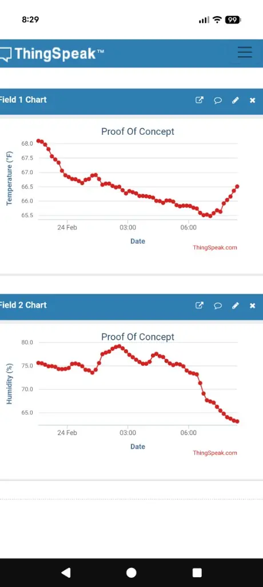
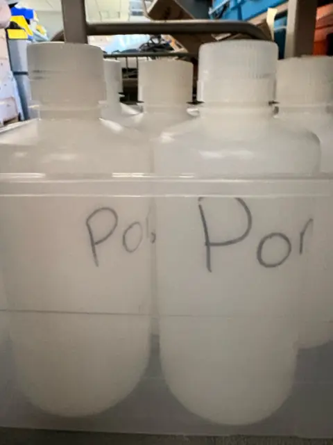
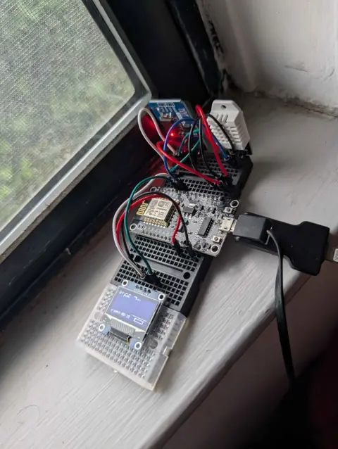

ThingSpeak dashboard
Temperature (°F) and humidity (%) channels uploaded from prototype firmware, used as an end-to-end check before field deployment.
Research
Stakeholders, ponds and sampling efficiency
2–3 hours
for a team of 5 to sample the ponds by hand, across multiple sites. Faster, repeatable sampling is the problem this team is working on.
The 3 DVC ponds support turtles, ducks, geese, and other wildlife. Observations note murky water, algae on walls, and occasional stressed fauna; circulation and aeration may be limiting factors. Manual sampling has taken 2–3 hours for a team of 5 across multiple sites, which is slow for decision-grade monitoring.
We are building repeatable instrumentation (lab capsule, bench IoT, and surface/underwater platforms) so biology and engineering can share aligned datasets, from bacteria cultures at ~30 °C to field temperature, pH, and turbidity traces.

Cloud logging and bench hardware
Compiled from the project goals, roadmap and milestones on this site. Plans change with design reviews.
| Reading | How | Status |
|---|---|---|
| Temperature | DHT-style sensor on the ESP8266 bench prototype; ThingSpeak Field 1 (°F). Blueprint goal: start with the temperature sensor path. | Logging from bench hardware |
| Humidity | Same bench prototype; ThingSpeak Field 2 (%). | Logging from bench hardware |
| pH | Sensing plan lists temperature and pH first; test strips read against lab control swatches. | Planned first |
| Turbidity | Sensing plan, after temperature and pH. | Planned |
| Dissolved oxygen | Sensing plan, after temperature and pH. | Planned |
| General hardness | Hardness testing in the sensing plan. | Planned |
| Position (GPS) | IoT monitor / boat design reviews; GPS tutorials for waypoint logging. | Planned |
| Test strip color | Color grading system on GitHub; camera + model path under evaluation. | Software on GitHub |

Temperature (°F) and humidity (%) channels uploaded from prototype firmware, used as an end-to-end check before field deployment.

NodeMCU-class board with local display, DHT-style temperature/humidity sensing, and WiFi uplink: the foundation for capsule logging and future pond surface nodes.